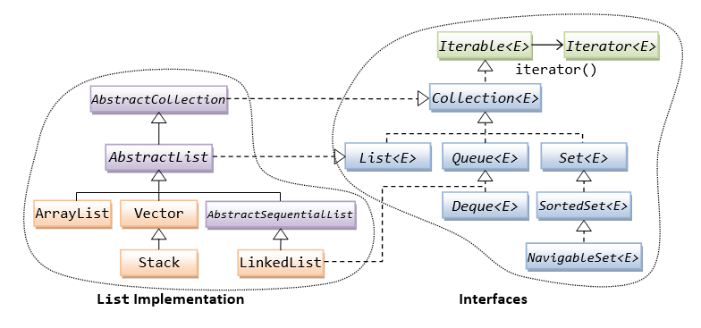

Introduction to the Collection Framework
Although we can use an array as a container to store a group of elements of the same type (primitives or objects). The array, however, does not support so-called dynamic allocation - it has a fixed length which cannot be changed once allocated. Furthermore, array is a simple linear structure. Many applications may require more complex data structure such as linked list, stack, hash table, set, or tree.
In Java, dynamically allocated data structures (such as ArrayList, LinkedList, Vector, Stack, HashSet, HashMap, Hashtable) are supported in a unified architecture called the Collection Framework, which mandates the common behaviors of all the classes.
A collection, as its name implied, is simply a container object that holds a collection of objects. Each item in a collection is called an element. A framework, by definition, is a set of interfaces that force you to adopt some design practices. A well-designed framework can improve your productivity and provide ease of maintenance.
The collection framework provides a unified interface to store, retrieve and manipulate the elements of a collection, regardless of the underlying actual implementation. This allows the programmers to program at the interface specification, instead of the actual implementation.
The Java Collection Framework package (java.util) contains:
- A set of interfaces,
- Implementation classes, and
- Algorithms (such as sorting and searching).
Similar Collection Framework is the C++ Standard Template Library (STL).
Prior to JDK 1.2, Java's data structures consist of array, Vector, and Hashtable that were designed in a non-unified way with inconsistent public interfaces. JDK 1.2 introduced the unified collection framework, and retrofits the legacy classes (Vector and Hashtable) to conform to this unified collection framework.
JDK 5 introduced Generics (which supports passing of types), and many related features (such as auto-boxing/auto-unboxing and for-each loop). The collection framework is retrofitted to support generics and takes full advantages of these new features.
To understand this chapter, you have to be familiar with:
- Interfaces, abstract methods and their implementations.
- Inheritance and Polymorphism, especially the upcasting and downcasting operations. See "Inheritance, Substitution, Polymorphism and Type Casting" for a quick summary.
You also need to be familiar with these concepts introduced in JDK 5:
- Auto-Boxing and Auto-Unboxing between primitive types and their wrapper classes. See "Auto-Boxing and Auto-Unboxing".
- The enhance fo-each loop. See "Enhanced for-each Loop".
- Generics. See "Generics".
You need to refer to the JDK API specification while reading this chapter. The classes and interfaces for the Collection Framework are kept in package java.util.
Generic Collection Framework (JDK 5) by Examples
Example 1: List<String> (List of Strings) Implemented by ArrayList
The java.util.List<E> interface is the most commonly used data structure of the Collection Framework, which models a resizable (dynamically-allocated) array supporting numerical index access. The java.util.ArrayList<E> class is the most commonly used implementation of List<E>.
The <E> indicates that the interfaces are generic in design. When you construct an instance of these generic types, you need to provide the specific type of the objects contained in these collection, e.g., <String>, <Integer>. This allows the compiler to perform type-checking when elements are added into the collection at compile-time to ensure type-safety at runtime.
1 2 3 4 5 6 7 8 9 10 11 12 13 14 15 16 17 18 19 20 21 22 23 24 25 26 27 28 29 30 31 32 33 34 35 36 37 38 39 40 41 42 43 44 45 46 47 48 49 |
import java.util.List; import java.util.ArrayList; import java.util.Iterator; // JDK 5 List<String> with Generics, implemented by an ArrayList public class J5ListOfStringTest { public static void main(String[] args) { // Declare a List<String> (List of String) implemented by an ArrayList<String> // The compiler is informed about the type of objects in the collection via <>. // It performs type checking when elements are added into the collection List<String> coffeeLst = new ArrayList<>(); // JDK 7 supports type inference on instantiation. // ArrayList<String> can be written as ArrayList<>, with type inferred from List<String> coffeeLst.add("espresso"); coffeeLst.add("latte"); coffeeLst.add("cappuccino"); System.out.println(coffeeLst); //[espresso, latte, cappuccino] // (1) Use an Iterator<String> to traverse through all the elements Iterator<String> iter = coffeeLst.iterator(); while (iter.hasNext()) { String str = iter.next(); System.out.println(str); } //espresso //latte //cappuccino // (2) Use an enhanced for-each loop (JDK 5) to traverse through the list for (String str : coffeeLst) System.out.println(str.toUpperCase()); //ESPRESSO //LATTE //CAPPUCCINO // A List supports numerical index access, where index begins at 0 for (int i = 0; i < coffeeLst.size(); ++i) { System.out.println(coffeeLst.get(i).substring(0, 3)); } //esp //lat //cap // Compiler checks the type of the elements added or retrieved //coffeeLst.add(new Integer(1234)); //compilation error: incompatible types: Integer cannot be converted to String //Integer intObj = coffeeLst.get(0); //compilation error: incompatible types: String cannot be converted to Integer } } |
Dissecting the Program
- Line 1-3 imports the collection framework classes and interfaces reside in the
java.utilpackage.

- The class hierarchy of the
ArrayList<E>is shown above. We observe thatArrayList<E>implementsList<E>,Collection<E>andIterable<E>interfaces. TheCollection<E>andIterable<E> interfaces define the common behaviors of all the collection implementations. - The interfaces/classes are designed (by the class designer) to take a generics type
E. To construct an instance of anArrayList<E>, we need to provide the actual type for generic typeE. In this example, we pass the actual typeStringfor the generic typeE. - In line 11, we construct an
ArrayList<String>instance, and upcast it to theList<String>interface. This is possible as theArrayList<String>is a subtype ofList<String>. Remember that a good program operates on the specifications instead of an actual implementation. The Collection Framework provides a set of interfaces so that you can program on these interfaces instead of the actual implementation. - JDK 7 supports type inference on instantiation to simplify the codes:
// Prior to JDK 7, you need to write List<String> coffeeLst = new ArrayList<String>(); // JDK 7 can infer on type from the type of the assigned variable List<String> coffeeLst = new ArrayList<>();
- Interface
Collectiondefines how to add and remove an element into the collection. InterfaceIterabledefines a mechanism to iterate or traverse through all the elements of a collection. - The super-interface
Collection<E>interface defines the common behaviors expected from aCollection<E>object (such as getting the size, adding and removing element). Instead of using the interfaceCollection<E>directly, it is more common to use one of its specialized sub-interfaces:List(an ordered list supporting numerical indexed access),Set(models mathematical set with no duplicate elements) orQueue(FIFO, priority queues).
The super-interfaceCollection<E>declares theseabstractmethods, implemented in concrete classArrayList<E>:// Interface java.util.Collection<E> abstract int size() // Returns the number of elements abstract boolean isEmpty() // Returns true if there is no elements abstract boolean add(E element) // Adds the given element (of the instantiated type only) abstract boolean remove(Object element) // Removes the given element, if present abstract boolean contains(Object element) // Returns true if this Collection contains the given element ......
Line 14-16 adds elements (of the instantiated actual typeString) to theCollection. - There are a few ways of traversing through the elements of a
Collection:- Via an associated
Iterator<E>(Lines 20-24) - Use the new for-each loop introduced in JDK 5 (Line 30)
- Use aggregate operations on Stream introduced in JDK 8. See "Example 4".
- Via an associated
- The super-interface
Iterable<E>defines a mechanism to iterate (or traverse) through all the elements of aCollection<E>object via a so-calledIterator<E>object. TheIterable<E>interface declares oneabstractmethod to retrieve theIterator<E>object associated with theCollection<E>.// Interface java.lang.Iterable<E> abstract Iterator<E> iterator(); // Returns the associated Iterator instance that can be used to traverse thru all the elements
- The
Iterator<E>interface declares the followingabstractmethods for traversing through theCollection<E>.// Interface java.util.Iterator<E> abstract boolean hasNext() // Returns true if it has more elements abstract E next() // Returns the next element (of the actual type)
Lines 20-24 retrieve theIterator<String>associated with thisArrayList<String>, and use a while-loop to iterate through all the elements of thisArrayList<String>. Take note that you need to specify the actual type. - Line 30 uses the new for-each loop introduced in JDK 5 to iterate through all the elements of a
Collection. Listsupports numerical index access via.get(index)method, with index begins from 0, shown in Lines 36-38.- With the use of generics, the compiler checks the type of elements added or retrieved and issue compilation error "incompatible type", as shown in lines 44-47. This is known as compiled-time type-safe.
Example 2: List<Integer> with Auto-Boxing/Auto-Unboxing
Collection can hold only objects, not primitives (such as int, double). JDK 5 introduces auto-boxing/auto-unboxing to simplify the conversion between primitives and their wrapper classes (such as int/Integer, double/Double, etc.)
1 2 3 4 5 6 7 8 9 10 11 12 13 14 15 16 17 18 19 |
import java.util.List; import java.util.ArrayList; // JDK 5 List of primitive wrapper objects with auto-boxing/auto-unboxing public class J5ListOfPrimitivesTest { public static void main(String[] args) { // Collection holds only objects, not primitives // JDK 5 supports auto-boxing/auto-unboxing of primitives to their wrapper class List<Integer> numLst = new ArrayList<>(); // List of Integer object (not int) numLst.add(111); // auto-box primitive int to Integer object numLst.add(222); System.out.println(numLst); //[111, 222] int firstNum = numLst.get(0); // auto-unbox Integer object to int primitive System.out.println(firstNum); //111 //numLst.add(33.33); // Only accept Integer or int(auto-box) //compilation error: incompatible types: double cannot be converted to Integer } } |
Dissecting the Program
- In this example, we pass actual type
Integerfor the generic typeE. In Line 9, we construct anArrayList<Integer>and upcast toList<Integer>. - In lines 10-11, we pass
intvalue into the.add(). Theintvalue is auto-boxed into anIntegerobject, and added into theList<Integer>. - In line 13, the
.get()returns anIntegerobject, which is auto-unboxed to anintvalue.
Example 3: Set<E> Implemented by HashSet
This example shows how to create a Collection of an user-defined objects.
The Set<E> interface models an unordered mathematical set without duplicate elements. HashSet<E> is the most common implementation of Set<E>.
We define a Person class with two private variables name and age, as follows:
Person.java
1 2 3 4 5 6 7 8 9 10 11 12 13 14 15 16 17 18 19 20 21 22 23 24 25 26 27 28 29 30 31 32 33 |
public class Person {
private String name; // private instance variables
private int age;
public Person(String name, int age) { // constructor
this.name = name; this.age = age;
}
public String getName() { // getter for name
return name;
}
public int getAge() { // getter for age
return age;
}
public String toString() { // describe itself
return name + "(" + age + ")";
}
public void sayHello() { // for testing
System.out.println(name + " says hello");
}
// Compare two Person objects by name strings, case insensitive
@Override
public boolean equals(Object o) {
return o != null && o instanceof Person && this.name.equalsIgnoreCase(((Person)o).name);
|
We shall test a Set<Person> is follows:
1 2 3 4 5 6 7 8 9 10 11 12 13 14 15 16 17 18 19 20 21 22 |
import java.util.Set; import java.util.HashSet; // JDK 5 Set of Person objects public class J5SetOfPersonTest { public static void main(String[] args) { Set<Person> personSet = new HashSet<>(); personSet.add(new Person("Peter", 21)); personSet.add(new Person("Paul", 18)); personSet.add(new Person("John", 60)); System.out.println(personSet); //[John(60), Peter(21), Paul(18)] // Unlike List, a Set is NOT ordered for (Person p : personSet) p.sayHello(); //John says hello //Peter says hello //Paul says hello // Set does not support duplicate elements System.out.println(personSet.add(new Person("Peter", 21))); //false } } |
Dissecting the Program
- We define our custom objects called
Personin "Person.java". - In this example, we pass actual type
Personfor the generic typeE. In Line 7, we construct an instance ofHashSet<Person>, and upcast toSet<Person>. - Take note that the elements in a
Setare not ordered, as shown in the output of Line 11. - A
Setdoes not duplicate elements, as shown in the output of Line 20. To compare twoPersonobjects, we override the.equal()and.hashCode()methods in "Person.java".
Example 4: JDK 8 Collection, Stream and Functional Programming (Preview)
JDK 8 greatly enhances the Collection Framework with the introduction of Stream API to support functional programming.
Person.java: See above
1 2 3 4 5 6 7 8 9 10 11 12 13 14 15 16 17 18 19 20 21 22 23 24 25 26 27 28 29 30 31 32 33 34 35 36 37 38 39 40 41 42 43 44 45 46 47 48 49 50 51 52 53 54 55 56 57 58 59 60 |
import java.util.List; import java.util.function.Predicate; import java.util.stream.Collectors; // JDK 8 Collection, Stream and Functional Programming public class J8StreamOfPersonTest { public static void main(String[] args) { List<Person> personLst = List.of( // JDK 9 instantiation of an unmodifiable List new Person("Peter", 21), new Person("Paul", 18), new Person("John", 60) ); System.out.println(personLst); //[Peter(21), Paul(18), John(60)] // Use a Predicate to filter the elements Predicate<Person> adult = p -> p.getAge() >= 21; // All adults say hello (filter-reduce(foreach)) personLst .stream() .filter(adult) .forEach(Person::sayHello); //Peter says hello //John says hello // Use a parallel stream (reduce(foreach)) personLst .parallelStream() .forEach(p -> System.out.println(p.getName())); //Paul //Peter //John // Get the average age of all adults (filter-map-reduce(aggregate)) double aveAgeAdults = personLst .stream() .filter(adult) .mapToInt(Person::getAge) .average() .getAsDouble(); System.out.println(aveAgeAdults); //40.5 // Collect the sum of ages (reduce(aggregate)) int sumAges = personLst .stream() .collect(Collectors.summingInt(Person::getAge)); System.out.println(sumAges); //99 // Collect the names starting with 'P' (filter-map-reduce(collect)) List<String> nameStartWithP = personLst .stream() .filter(p -> p.getName().charAt(0) == 'P') .map(Person::getName) .collect(Collectors.toList()); System.out.println(nameStartWithP); //[Peter, Paul] } } |
This article focuses on JDK 5 Collection Framework. Read "Lambda Expressions, Streams and Functional Programming" and "Collection Framework, Part 2" for details on JDK 8 enhancements.
Pre-JDK 5 vs. JDK 5 Collection Framework
JDK 5 introduces Generics to support parameterized type and retrofitted the Collection Framework. To understand the differences between Pre-JDK 5 and JDK 5 Collection Framework, read "Generics".
The Collection Interfaces
The hierarchy of the interfaces and the commonly-used implementation classes in the Collection Framework is as shown below:

- The base interface is
Collection<E>(which is a subtype ofIterable<E>), that defines the common behaviors. - We hardly program at the
Collection<E>, but one of its specialized subtypes. The commonly-used subtypes of areList<E>(ordered elements supporting index access),Set<E>(unordered and non-duplicate) andQueue<E>(FIFO and priority queues). - The popular implementation classes for
List<E>areArrayList<E>andLinkedList<E>; forSetareHashSet<E>andTreeSet<E>; for Queue isPriorityQueue<E>. - The
Iterator<E>is used to traverse (or iterate) through each element of aCollection<E>. Map<K,V>(or associative array), which supports key-value pair, is NOT a subtype ofCollection<E>. The popular implementation class isHashMap<K,V>.- The
Collections(like Arrays) is a utility class, which containsstaticmethods to support algorithms like searching and sorting.
Iterable<E>/Iterator<E> Interfaces and for-each Loop
There are three ways to traverse through all the elements of a Collection:
- Via the associated
Iterator<E>object retrieved from the super-typeIterable<E> - Using the for-each loop (introduced in JDK 5)
- Via the Stream API (introduced in JDK 8) (to be discussed in "Collection Framework, Part 2")
The Iterable<E> Interface
The java.lang.Iterable<E> interface, which takes a generic type <E> and read as Iterable of elements of type E, declares one abstract method called iterator() to retrieve the Iterator<E> object associated with the Collection<E> object. This Iterator<E> object can then be used to traverse through all the elements of the associated collection.
// Interface java.lang.Iterable<E> abstract Iterator<E> iterator(); // Returns the associated Iterator instance that can be used to traverse thru all the elements of the collection
All implementations of the Collection (e.g., ArrayList, LinkedList, Vector) must implement this method, which returns an object that implements Iterator interface, for traversal of the Collection.
The Iterator<E> Interface
The Iterator<E> interface, declares the following three abstract methods:
// Interface java.util.Iterator<E> abstract boolean hasNext() // Returns true if it has more elements abstract E next() // Returns the next element of generic type E abstract void remove() // Removes the last element returned by the iterator
You can use a while-loop to iterate through the elements with the Iterator as follows:
List<String> lst = new ArrayList<>(); // JDK 7 type inference lst.add("alpha"); lst.add("beta"); lst.add("charlie"); // (1) Using the associated Iterator<E> to traverse through all elements // Retrieve the Iterator associated with this List via the iterator() method Iterator<String> iter = lst.iterator(); // Transverse thru this List via the Iterator while (iter.hasNext()) { // Retrieve each element and process String str = iter.next(); System.out.println(str); } //(2) Using the for-each loop (JDK 5) to traverse through all elements // JDK 5 introduces a for-each loop to simplify the above for (str: lst) System.out.println(str);
The for-each Loop
JDK 5 introduces a new for-each loop to simplify traversal of a Collection, as shown in the above code.
for-each Loop vs. Iterator
The for-loop provides a convenience way to traverse through a collection of elements. But it hides the Iterator, hence, you CANNOT remove (via Iterator.remove()) or replace the elements.
On the other hand, as the loop variable receives a "cloned" copy of the object reference, the enhanced for-loop can be used to modify "mutable" elements (such as StringBuilder) via the "cloned" object references, but it cannot modify "immutable" objects (such as String and primitive wrapper classes) as new references are created.
Example: Using Enhanced for-each Loop on Collection of "Mutable" Objects (such as StringBuilder)
1 2 3 4 5 6 7 8 9 10 11 12 13 14 15 16 17 |
import java.util.List;
import java.util.ArrayList;
public class ForEachMutableTest {
public static void main(String[] args) {
List<StringBuilder> lst = new ArrayList<>();
lst.add(new StringBuilder("alpha"));
lst.add(new StringBuilder("beta"));
lst.add(new StringBuilder("charlie"));
System.out.println(lst); //[alpha, beta, charlie]
for (StringBuilder sb : lst) {
sb.append("123"); // can modify "mutable" objects
}
System.out.println(lst); //[alpha123, beta123, charlie123]
}
}
|
Example: Using Enhanced for-each loop on Collection of "Immutable" Objects (such as String)
1 2 3 4 5 6 7 8 9 10 11 12 13 14 15 16 17 |
import java.util.List;
import java.util.ArrayList;
public class ForEachImmutableTest {
public static void main(String[] args) {
List<String> lst = new ArrayList<>();
lst.add("alpha");
lst.add("beta");
lst.add("charlie");
System.out.println(lst); //[alpha, beta, charlie]
for (String str : lst) {
str += "change!"; // cannot modify "immutable" objects
}
System.out.println(lst); //[alpha, beta, charlie]
}
}
|
Collection<E> Interface
The Collection<E>, which takes a generic type E and read as Collection of element of type E, is the root interface of the Collection Framework. It defines the common behaviors expected of all classes, such as how to add or remove an element, via the following abstract methods:
// Interface java.util.Collection<E> // Basic Operations abstract int size() // Returns the number of elements abstract boolean isEmpty() // Returns true if there is no element // "Individual Element" Operations abstract boolean add(E element) // Add the given element abstract boolean remove(Object element) // Removes the given element, if present abstract boolean contains(Object element) // Returns true if this Collection contains the given element // "Bulk" (mutable) Operations abstract void clear() // Removes all the elements abstract boolean addAll(Collection<? extends E> c) // Another Collection of E or E's subtypes abstract boolean containsAll(Collection<?> c) // Another Collection of any types abstract boolean removeAll(Collection<?> c) abstract boolean retainAll(Collection<?> c) // Comparison - Objects that are equal shall have the same hashCode abstract boolean equals(Object o) abstract int hashCode() // Array Operations abstract Object[] toArray() // Convert to an Object array abstract <T> T[] toArray(T[] a) // Convert to an array of the given type T
Take note that many of these operations are mutable, i.e., they modify the Collection object. (In the Functional Programming introduced in JDK 8, operations are immutable and should not modify the source collection.)
Collection of Primitives?
A Collection<E> can only contain objects, not primitives (such as int or double). Primitive values are to be wrapped into objects (via the respective wrapper classes such as Integer and Double). JDK 5 introduces auto-boxing and auto-unboxing to simplify the wrapping and unwrapping processes. Read "Auto-Boxing and Auto-Unboxing" section for example.
List<E>, Set<E> and Queue<E>: Specialized Sub-Interfaces of Collection<E>
In practice, we typically program on one of the specialized sub-interfaces of the Collection<E> interface: List<E>, Set<E>, or Queue<E>.
List<E>: models a resizable linear array, which allows numerical indexed access, with index starting from 0.List<E>can contain duplicate elements. Implementations ofList<E>includeArrayList<E>,LinkedList<E>,Vector<E>andStack<E>.Set<E>: models a mathematical set, where no duplicate elements are allowed. Implementations ofSet<E>includeHashSet<E>andLinkedHashSet<E>. The sub-interfaceSortedSet<E>models an ordered and sorted set of elements, implemented byTreeSet<E>.Queue<E>: models queues such as First-in-First-out (FIFO) queue and priority queue. It sub-interfaceDeque<E>models queues that can be operated on both ends. Implementations includePriorityQueue<E>,ArrayDeque<E>andLinkedList<E>.
The details of these sub-interfaces and implementations will be covered later in the implementation section.
Map<K,V> Interface
In Java, a Map (also known as associative array) contains a collection of key-value pairs. It is similar to List and array. But instead of an numerical key 0, 1, 2, ..., a Map's key could be any arbitrary objects.
The interface Map<K,V>, which takes two generic types K and V (read as Map of key type K and value type V), is used as a collection of "key-value pairs". No duplicate key is allowed. Implementations include HashMap<K,V>, Hashtable<K,V> and LinkedHashMap<K,V>. Its sub-interface SortedMap<K,V> models an ordered and sorted map, based on its key, implemented in TreeMap<K,V>.
Take note that Map<K,V> is not a sub-interface of Collection<E>, as it involves a pair of objects for each element. The details will be covered later.
List Interfaces, Implementations and Algorithms
A List<E> models a resizable linear array, which supports numerical indexed access, with index starts from 0. Elements in a list can be retrieved and inserted at a specific index position based on an int index. It can contain duplicate elements. It can contain null elements. You can search a list, iterate through its elements, and perform operations on a selected range of values in the list.
List is the most commonly-used data structure, as a resizable array.
The List<E> interface declares the following abstract methods, in additional to its super-interfaces. Since List has a positional index. Operation such as add(), remove(), set() can be applied to an element at a specified index position.
// Methods inherited from Interface java.lang.Iterable<E> abstract Iterator<E> iterator(); // Methods inherited from Interface java.util.Collection<E> abstract int size() abstract boolean isEmpty() abstract boolean add(E element) abstract boolean remove(Object obj) abstract boolean contains(Object obj) abstract void clear(); ...... // Interface java.util.List<E> // Operations at a specified index position abstract void add(int index, E element) // add at index abstract E set(int index, E element) // replace at index abstract E get(int index) // retrieve at index without remove abstract E remove(int index) // remove at index abstract int indexOf(Object obj) abstract int lastIndexOf(Object obj) // Operations on a range fromIndex (inclusive) toIndex (exclusive) abstract List<E> subList(int fromIndex, int toIndex)
The abstract superclass AbstractList provides implementations to many of the abstract methods declared in List and its super-types Collection and Iterable. However, some methods such as get(int index) remains abstract. These methods are implemented by the concrete subclasses such as ArrayList and Vector.
[TODO] Example
ArrayList<E> and Vector<E>: Implementation Classes for List<E>
ArrayList<E> is the best all-around implementation of the List<E> interface. Many useful methods are already implemented in AbstractList but overridden for efficiency in ArrayList (e.g., add(), remove(), set() etc.).
Vector<E> is a legacy class (since JDK 1.0), which is retrofitted to conform to the Collection Framework (in JDK 1.2). Vector is a synchronized thread-safe implementation of the List interface. It also contains additional legacy methods (e.g., addElement(), removeElement(), setElement(), elementAt(), firstElement(), lastElement(), insertElementAt()). There is no reason to use these legacy methods - other than to maintain backward compatibility.
ArrayList is not synchronized. The integrity of ArrayList instances is not guaranteed under multithreading. Instead, it is the programmer's responsibility to ensure synchronization. On the other hand, Vector is synchronized internally. Read "Synchronized Collection" if you are dealing with multi-threads.
Java Performance Tuning Tip: Synchronization involves overheads. Hence, if synchronization is not an issue, you should use ArrayList instead of Vector for better performance.
[TODO] Example
Stack<E>: Implementation Class for List<E>
Stack<E> is a last-in-first-out queue (LIFO) of elements. Stack extends Vector, which is a synchronized resizable array, with five additional methods:
// Class java.util.Stack<E> E push(E element) // pushes the specified element onto the top of the stack E pop() // removes and returns the element at the top of the stack E peek() // returns the element at the top of stack without removing boolean empty() // tests if this stack is empty int search(Object obj) // returns the distance of the specified object from the top // of stack (distance of 1 for TOS), or -1 if not found
[TODO] Example
LinkedList<E>: Implementation Class for List<E>
LinkedList<E> is a double-linked list implementation of the List<E> interface, which is efficient for insertion and deletion of elements, in the expense of more complex structure.
LinkedList<E> also implements Queue<E> and Deque<E> interfaces, and can be processed from both ends of the queue. It can serve as FIFO or LIFO queue.
[TODO] Example
Converting a List to an Array: toArray()
The super-interface Collection<E> defines a method called toArray() to create a fixed-length array based on this list. The returned array is free for modification.
// Interface java.util.Collection<E> abstract Object[] toArray() // Object[] version abstract <T> T[] toArray(T[] a) // Generic type version
Example - List to array
1 2 3 4 5 6 7 8 9 10 11 12 13 14 15 16 17 18 19 20 21 22 |
import java.util.List;
import java.util.ArrayList;
import java.util.Arrays;
public class ListToArrayTest {
public static void main(String[] args) {
List<String> lst = new ArrayList<>();
lst.add("alpha");
lst.add("beta");
lst.add("charlie");
// Use the Object[] version
Object[] strArray1 = lst.toArray();
System.out.println(Arrays.toString(strArray1)); //[alpha, beta, charlie]
// Use the generic type version - Need to specify the type in the argument
String[] strArray2 = lst.toArray(new String[lst.size()]); // pass a String array of the same size
System.out.println(strArray2.length); //3
|
Using an Array as a List: Arrays.asList()
The utility class java.util.Arrays provides a static method Arrays.asList() to convert an array into a List<T>. However, change to the list write-thru the array and vice versa. Take note that the name of the method is asList and not toList.
// Returns a fixed-size list backed by the specified array.
// Change to the list write-thru to the array.
public static <T> List<T> asList(T[] a)
Example - Array as List
1 2 3 4 5 6 7 8 9 10 11 12 13 14 15 16 17 18 19 20 21 22 |
import java.util.List;
import java.util.ArrayList;
import java.util.Arrays;
public class TestArrayAsList {
public static void main(String[] args) {
String[] strs = {"alpha", "beta", "charlie"};
System.out.println(Arrays.toString(strs)); //[alpha, beta, charlie]
List<String> lst = Arrays.asList(strs);
System.out.println(lst); //[alpha, beta, charlie]
// Changes in array or list write thru
strs[0] += "88";
lst.set(2, lst.get(2) + "99");
System.out.println(Arrays.toString(strs)); //[alpha88, beta, charlie99]
System.out.println(lst); //[alpha88, beta, charlie99]
// Initialize a list using an array
List<Integer> lstInt = Arrays.asList(22, 44, 11, 33);
System.out.println(lstInt); //[22, 44, 11, 33]
}
}
|
Comparison of ArrayList, Vector, LinkedList and Stack
[TODO] Example on benchmarking ArrayList, Vector, LinkedList, and Stack
List's Algorithms
The utility class java.util.Collections provides many useful algorithms for collection. Some work for any Collections; while many work for Lists (with numerical index) only.
Mutating Operators
// Utility Class java.util.Collections static void swap(List<?> lst, int i, int j) // Swaps the elements at the specified indexes static void shuffle(List<?> lst) // Randomly permutes the List static void shuffle(List<?> lst, Random rnd) // Randomly permutes the List using the specified source or randomness static void rotate(List<?> lst, int distance) // Rotates the elements by the specified distance static void reverse(List<?> lst) // Reverses the order of elements static <T> void fill(List<? super T>, T obj) // Replaces all elements with the specified object static <T> void copy(List<? super T> dest, List<? extends T> src) // Copies all elements from src to dest static <T> boolean replaceAll(List<T> lst, T oldVal, T newVal) // Replaces all occurrences
[TODO] example
Sub-List (Range-View) Operations
The List<E> supports range-view operation via .subList() as follows. The returned List is backup by the given List, so change in the returned List are reflected in the original List.
// Interface java.util.List<E> List<E> subList(int fromIdx, int toIdx)
The Utility class Collections supports these sub-list operations:
// Utility Class java.util.Collections static int indexOfSubList(List<?> src, List<?> target) static int lastIndexOfSubList(List<?> src, List<?> target)
For example,
import java.util.List;
import java.util.ArrayList;
import java.util.Collections;
public class SubListTest {
public static void main(String[] args) {
List<Integer> lst = new ArrayList<>();
for (int i = 0; i < 10; ++i) lst.add(i * 10);
System.out.println(lst); //[0, 10, 20, 30, 40, 50, 60, 70, 80, 90]
lst.subList(3, 6).clear(); // Remove the sublist
System.out.println(lst); //[0, 10, 20, 60, 70, 80, 90]
System.out.println(lst.subList(2, 5).indexOf(60)); //1 (of the subList)
List<Integer> lst2 = List.of(20, 60, 70); // JDK 9
System.out.println(Collections.indexOfSubList(lst, lst2)); //2
System.out.println(Collections.lastIndexOfSubList(lst, lst2)); //2
}
}
Searching, Sorting and Ordering
The utility class Collections provides these static methods for searching, sorting and ordering (max, min) of List:
// Utility Class java.util.Collections static <T> int binarySearch(List<? extends T> lst, T key, Comparator<? super T> comp) static <T> int binarySearch(List<? extends Comparable<? super T>> lst, T key) // Searches for the specified key using binary search static <T> void sort(List<T> lst, Comparator<? super T> comp) static <T extends Comparable<? super T>> void sort(List<T> lst) static <T> T max(Collection<? extends T> coll, Comparator<? super T> comp) static <T extends Object & Comparable<? super T>> T max(Collection<? extends T> coll) static <T> T min(Collection<? extends T> coll, Comparator<? super T> comp) static <T extends Object & Comparable<? super T>> T min(Collection<? extends T> coll)
Each of these algorithms has two versions:
- Requires a
Comparatorobject with acompare()method to determine the order of the elements. - Requires a
Listwhich implementComparableinterface, with a methodcompareTo()to determine the order of elements.
We shall elaborate in the next section.
List Ordering/Searching/Sorting with Comparable<T>/Comparator<T>
Ordering is needed in these two situations:
- To sort a
Collectionor an array (using theCollections.sort()orArrays.sort()methods), an ordering specification is needed. - Some
Collections, in particular,SortedSet(TreeSet) andSortMap(TreeMap), are ordered. That is, the objects are stored according to a specified order.
There are two ways to specify the ordering of objects:
- Create a special
java.util.Comparator<T>object, with a methodcompare()to specify the ordering of comparing two objects. - Make the objects implement the
java.lang.Comparable<T>interface, and override thecompareTo()method to specify the ordering of comparing two objects.
Comparable<T> Interface
A java.lang.Comparable<T> interface specifies how two objects are to be compared for ordering. It defines one abstract method:
// Interface java.lang.Comparable<T> abstract int compareTo(T o) // Returns a negative integer, zero, or a positive integer // if this object is less than, equal to, or greater than the given object
This ordering is referred to as the class's natural ordering.
It is strongly recommended that compareTo() be consistent with equals() and hashCode() (inherited from java.lang.Object):
- If
compareTo()returns a zero,equals()should returntrue. - If
equals()returnstrue,hashCode()shall produce the sameint.
All the eight primitive wrapper classes (Byte, Short, Integer, Long, Float, Double, Character and Boolean) implement Comparable<T> interface, with the compareTo() uses the numerical order.
The String class also implements Comparable<String> interface, which compares two strings lexicographically based on the Unicode value of each character in the strings. The uppercase letters are smaller than the lowercase counterparts.
Example 1: Searching/Sorting String and Primitive Wrapper Types, which implement Comparable<T>
The utility class java.util.Arrays and java.util.Collections provide many static method for the various algorithms such as sorting and searching. In this example, we use the Arrays.sort() and Collections.sort() methods to sort an array of Strings and a List of Integers, based on their Comparable<T>'s compareTo() method.
1 2 3 4 5 6 7 8 9 10 11 12 13 14 15 16 17 18 19 20 21 22 23 24 25 26 27 28 29 30 |
import java.util.Arrays;
import java.util.List;
import java.util.ArrayList;
import java.util.Collections;
public class StringPrimitiveComparableTest {
public static void main(String[] args) {
// Sort/search an "array" of Strings using Arrays.sort() and Arrays.binarySearch()
// using ordering specified in compareTo()
String[] strArray = {"Hello", "hello", "Hi", "HI", "Hello"}; // has duplicate elements
Arrays.sort(strArray); // sort in place and mutable
System.out.println(Arrays.toString(strArray)); //[HI, Hello, Hello, Hi, hello]
// The array must be sorted for binarySearch()
System.out.println(Arrays.binarySearch(strArray, "Hello")); //2
System.out.println(Arrays.binarySearch(strArray, "HELLO")); //-1 (insertion at index 0)
// Sort/search a List<Integer> using Collections.sort() and Collections.binarySearch()
List<Integer> lst = new ArrayList<>();
lst.add(22); // int auto-box to Integer
lst.add(11);
lst.add(44);
lst.add(11); // duplicate element
Collections.sort(lst); // sort in place and mutable
System.out.println(lst); //[11, 11, 22, 44]
System.out.println(Collections.binarySearch(lst, 22)); //2
System.out.println(Collections.binarySearch(lst, 35)); //-4 (insertion at index 3)
}
}
|
Example 2: Custom Implementation of Comparable<T>
Let's create a subclass of Person (see "Person.java" above), called ComparablePerson which implements Comparable<Person> interface, and try out the Collections.sort() and Collections.binarySearch() methods.
1 2 3 4 5 6 7 8 9 10 11 |
public class ComparablePerson extends Person implements Comparable<Person> {
public ComparablePerson(String name, int age) { // constructor
super(name, age);
}
// Order by the name strings, case insensitive
@Override
public int compareTo(Person p) {
return this.getName().compareToIgnoreCase(p.getName()); // via String's compareToIgnoreCase()
}
}
|
1 2 3 4 5 6 7 8 9 10 11 12 13 14 15 16 17 18 19 20 21 |
import java.util.List;
import java.util.ArrayList;
import java.util.Collections;
public class ComparablePersonTest {
public static void main(String[] args) {
List<ComparablePerson> pLst = new ArrayList<>();
pLst.add(new ComparablePerson("Peter", 21));
pLst.add(new ComparablePerson("Paul", 18));
pLst.add(new ComparablePerson("John", 60));
System.out.println(pLst); //[Peter(21), Paul(18), John(60)]
// Use compareTo() for ordering
Collections.sort(pLst); // sort in place, mutable
System.out.println(pLst); //[John(60), Paul(18), Peter(21)]
// Use compareTo() too
System.out.println(Collections.binarySearch(pLst, new ComparablePerson("PAUL", 18))); //1
System.out.println(Collections.binarySearch(pLst, new ComparablePerson("PAUL", 16))); //1
System.out.println(Collections.binarySearch(pLst, new ComparablePerson("Kelly", 18))); //-2
}
}
|
Comparator<T> Interface
Besides the java.lang.Comparable<T> for the natural ordering, you can pass a java.util.Comparator<T> object into the sorting methods (Collections.sort() or Arrays.sort()) to provide precise control over the ordering. The Comparator<T> will override the Comparable<T>, if available.
The Comparator<T> interface declares one abstract method (known as Functional Interface in JDK 8):
// java.util.Comparator<T> abstract int compare(T o1, T o2) // Returns a negative integer, zero, or a positive integer as the // first argument is less than, equal to, or greater than the second.
Take note that you need to construct an instance of Comparator<T>, and invoke compare() to compare o1 and o2. [In the earlier Comparable<T>, the method is called compareTo() and it takes only one argument, i.e., this object compare to the given object.]
Example 3: Using Customized Comparator<T> for String and Integer
In this example, instead of using the natural Comparable<T>, we define our customized Comparator<T> for Strings and Integers. We can do this via any of the following ways:
- A named inner class
- An anonymous inner class
- Lambda Expressions (JDK 8)
import java.util.List;
import java.util.ArrayList;
import java.util.Arrays;
import java.util.Collections;
import java.util.Comparator;
public class StringPrimitiveComparatorTest {
// Define an "named inner class" implements Comparator<String>
// to order strings in case-insensitive manner
public static class StringComparator implements Comparator<String> {
@Override
public int compare(String s1, String s2) {
return s1.compareToIgnoreCase(s2);
}
}
public static void main(String[] args) {
// Use a customized Comparator for Strings
Comparator<String> strComp = new StringComparator();
// Sort and search an "array" of Strings
String[] array = {"Hello", "Hi", "HI", "hello", "Hello"}; // with duplicate
Arrays.sort(array, strComp);
System.out.println(Arrays.toString(array)); //[Hello, hello, Hello, Hi, HI]
System.out.println(Arrays.binarySearch(array, "Hello", strComp)); //2
System.out.println(Arrays.binarySearch(array, "HELLO", strComp)); //2 (case-insensitive)
// Use an "anonymous inner class" to implement Comparator<Integer>
Comparator<Integer> intComp = new Comparator<Integer>() {
@Override
public int compare(Integer i1, Integer i2) {
return i1%10 - i2%10;
}
};
// Sort and search a "List" of Integers
List<Integer> lst = new ArrayList<Integer>();
lst.add(42); // int auto-box Integer
lst.add(21);
lst.add(34);
lst.add(13);
Collections.sort(lst, intComp);
System.out.println(lst); //[21, 42, 13, 34]
System.out.println(Collections.binarySearch(lst, 22, intComp)); //1
System.out.println(Collections.binarySearch(lst, 35, intComp)); //-5 (insertion at index 4)
}
}
Try: Modify the Comparator to sort in A, a ,B, b, C, c ... (uppercase letter before the lowercase).
Notes: You can use Lambda Expressions (JDK 8) to shorten this code, as follows:
import java.util.Arrays;
import java.util.List;
import java.util.ArrayList;
import java.util.Collections;
import java.util.Comparator;
public class StringPrimitiveComparatorJ8Test { // JDK 8
public static void main(String[] args) {
// Use a customized Comparator for Strings
Comparator<String> strComp = (s1, s2) -> s1.compareToIgnoreCase(s2);
// The lambda expression create an instance of an anonymous inner class implements
// Comparator<String> with the body of the single-abstract-method compare()
// Sort and search an "array" of Strings
String[] array = {"Hello", "Hi", "HI", "hello", "Hello"}; // with duplicate
Arrays.sort(array, strComp);
System.out.println(Arrays.toString(array)); //[Hello, hello, Hello, Hi, HI]
System.out.println(Arrays.binarySearch(array, "Hello", strComp)); //2
System.out.println(Arrays.binarySearch(array, "HELLO", strComp)); //2 (case-insensitive)
// Use a customized Comparator for Integers
Comparator<Integer> intComp = (i1, i2) -> i1%10 - i2%10;
// Sort and search a "List" of Integers
List<Integer> lst = new ArrayList<Integer>();
lst.add(42); // int auto-box Integer
lst.add(21);
lst.add(34);
lst.add(13);
Collections.sort(lst, intComp);
System.out.println(lst); //[21, 42, 13, 34]
System.out.println(Collections.binarySearch(lst, 22, intComp)); //1
System.out.println(Collections.binarySearch(lst, 35, intComp)); //-5 (insertion at index 4)
}
}
More example at "Example: Comparator Lambda".
Example 4: Using Customized Comparator<Person> for Person Objects
Person.java: See above
import java.util.List;
import java.util.ArrayList;
import java.util.Comparator;
import java.util.Collections;
public class ComparatorPersonTest {
public static void main(String[] args) {
List<Person> pLst = new ArrayList<>();
pLst.add(new Person("Peter", 21));
pLst.add(new Person("Paul", 18));
pLst.add(new Person("John", 60));
System.out.println(pLst); //[Peter(21), Paul(18), John(60)]
// Using an anonymous inner class
Comparator<Person> comp = new Comparator<>() {
@Override
public int compare(Person p1, Person p2) {
return p1.getName().compareToIgnoreCase(p2.getName());
}
};
// Use compareTo() for ordering
Collections.sort(pLst, comp);
System.out.println(pLst); //[John(60), Paul(18), Peter(21)]
// Use compareTo() too
System.out.println(Collections.binarySearch(pLst, new Person("PAUL", 18), comp)); //1
System.out.println(Collections.binarySearch(pLst, new Person("PAUL", 16), comp)); //1
System.out.println(Collections.binarySearch(pLst, new Person("Kelly", 18), comp)); //-2
// Using JDK 8 Lambda Expression to create an instance of anonymous inner class
// implements Comparator<Person>
pLst.add(new Person("Janes", 30));
System.out.println(pLst); //[John(60), Paul(18), Peter(21), Janes(30)]
Collections.sort(pLst,
(p1, p2) -> p1.getName().toLowerCase().compareTo(p2.getName().toLowerCase()));
System.out.println(pLst); //[Janes(30), John(60), Paul(18), Peter(21)]
}
}
Set<E> Interfaces, Implementations and Algorithms
The Set<E> interface models a mathematical set, where no duplicate elements are allowed (e.g., playing cards). It may contain a single null element.

The Set<E> interface declares the following abstract methods. The insertion, deletion and inspection methods returns false if the operation fails, instead of throwing an exception.
// Interface java.util.Set<E> abstract boolean add(E o) // adds the specified element if it is not already present abstract boolean remove(Object o) // removes the specified element if it is present abstract boolean contains(Object o) // returns true if it contains o // Set operations abstract boolean addAll(Collection<? extends E> c) // Set union abstract boolean retainAll(Collection<?> c) // Set intersection
The implementations of Set<E> interface include:
HashSet<E>: Stores the elements in a hash table (hashed via thehashcode()).HashSetis the best all-round implementation forSet.LinkedHashSet<E>: Stores the elements in a linked-list hash table for better efficiency in insertion and deletion. The element are hashed via thehashCode()and arranged in the linked list according to the insertion-order.TreeSet<E>: Also implements sub-interfacesNavigableSetandSortedSet. Stores the elements in a red-black tree data structure, which are sorted and navigable. Efficient in search, add and remove operations (inO(log(n))).
HashSet<E> By Example
Let's write a Book class, and create a Set of Book objects.
1 2 3 4 5 6 7 8 9 10 11 12 13 14 15 16 17 18 19 20 21 22 23 24 25 26 |
public class Book {
private int id;
private String title;
public Book(int id, String title) { // constructor
this.id = id;
this.title = title;
}
@Override
public String toString() { // describe itself
return id + ": " + title;
}
// Two books are equal if they have the same id
@Override
public boolean equals(Object o) {
return o != null && o instanceof Book && this.id == ((Book)o).id;
}
// To be consistent with equals(). Two objects which are equal have the same hash code.
@Override
public int hashCode() {
return id;
}
}
|
We need to provide an equals() method, so that the Set implementation can test for equality and duplication. In this example, we choose the id as the distinguishing feature. We override equals() to return true if two books have the same id. We also override the hashCode() to be consistent with equals().
1 2 3 4 5 6 7 8 9 10 11 12 13 14 15 16 17 18 19 20 21 22 23 24 25 26 27 28 29 30 31 32 33 34 35 36 37 38 |
import java.util.HashSet;
import java.util.Set;
public class HashSetTest {
public static void main(String[] args) {
Book book1 = new Book(1, "Java for Dummies");
Book book1Dup = new Book(1, "Java for the Dummies"); // same id as above
Book book2 = new Book(2, "Java for more Dummies");
Book book3 = new Book(3, "more Java for more Dummies");
Set<Book> set1 = new HashSet<Book>();
set1.add(book1);
set1.add(book1Dup); // duplicate id, not added
set1.add(book1); // added twice, not added
set1.add(book3);
set1.add(null); // Set can contain a null
set1.add(null); // but no duplicate
set1.add(book2);
System.out.println(set1);
//[null, 1: Java for Dummies, 2: Java for more Dummies, 3: more Java for more Dummies]
set1.remove(book1);
set1.remove(book3);
System.out.println(set1); //[null, 2: Java for more Dummies]
Set<Book> set2 = new HashSet<Book>();
set2.add(book3);
System.out.println(set2); //[3: more Java for more Dummies]
set2.addAll(set1); // "union" with set1
System.out.println(set2); //[null, 2: Java for more Dummies, 3: more Java for more Dummies]
set2.remove(null);
System.out.println(set2); //[2: Java for more Dummies, 3: more Java for more Dummies]
set2.retainAll(set1); // "intersection" with set1
System.out.println(set2); //[2: Java for more Dummies]
}
}
|
- A
Setcannot hold duplicate element. The elements are check for duplication via the overriddenequal(). - A
Setcan hold anullvalue as its element (but no duplicate too). - The
addAll()andretainAll()perform set union and set intersection operations, respectively.
Take note that the arrangement of the elements is arbitrary, and does not correspond to the order of add().
LinkedHashSet<E> By Example
Unlike HashSet, LinkedHashSet builds a link-list over the hash table for better efficiency in insertion and deletion (in the expense of more complex structure). It maintains its elements in the insertion-order (i.e., order of add()).
1 2 3 4 5 6 7 8 9 10 11 12 13 14 15 16 17 18 19 20 21 |
import java.util.LinkedHashSet;
import java.util.Set;
public class LinkedHashSetTest {
public static void main(String[] args) {
Book book1 = new Book(1, "Java for Dummies");
Book book1Dup = new Book(1, "Java for the Dummies"); // same id as above
Book book2 = new Book(2, "Java for more Dummies");
Book book3 = new Book(3, "more Java for more Dummies");
Set<Book> set = new LinkedHashSet<Book>();
set.add(book1);
set.add(book1Dup); // duplicate id, not added
set.add(book1); // added twice, not added
set.add(book3);
set.add(null); // Set can contain a null
set.add(null); // but no duplicate
set.add(book2);
System.out.println(set);
//[1: Java for Dummies, 3: more Java for more Dummies, null, 2: Java for more Dummies]
}
}
|
The output clearly shows that the set is ordered according to the order of add().
SortedSet<E> and NavigableSet<E> Interfaces
Elements in a SortedSet<E> are sorted during add(), either using the natural ordering in the Comparable<T>, or given a Comparator<T> object. Read "Ordering, Sorting and Searching" for details on Comparable<T> and Comparator<T>.
The NavigableSet<E> is a sub-interface of SortedSet<E>, which declares these additional navigation methods:
// Interface java.util.NavigableSet<E> abstract Iterator<E> iterator() // Returns an iterator in ascending order. abstract Iterator<E> descendingIterator() // Returns an iterator in descending order. // Per-Element operation abstract E floor(E e) // Returns the greatest element less than or equal to the given element, // or null if there is no such element. abstract E ceiling(E e) // Returns the least element greater than or equal to the given element, or null abstract E lower(E e) // Returns the greatest element strictly less than the given element, or null abstract E higher(E e) // Returns the least element strictly greater than the given element, or null // Subset operation abstract SortedSet<E> headSet(E toElement) // Returns a view whose elements are strictly less than toElement. abstract SortedSet<E> tailSet(E fromElement) // Returns a view whose elements are greater than or equal to fromElement. abstract SortedSet<E> subSet(E fromElement, E toElement) // Returns a view whose elements range from fromElement (inclusive) to toElement (exclusive)
TreeSet<E> by Example
TreeSet<E> is an implementation to NavigableSet<E> and SortedSet<E>.
Example - TreeSet with Comparable<E>
1 2 3 4 5 6 7 8 9 10 11 12 13 14 15 16 17 18 19 20 21 22 23 24 25 26 27 28 |
public class AddressBookEntry implements Comparable<AddressBookEntry> {
private String name, address, phone;
public AddressBookEntry(String name) { // constructor, ignore address and phone
this.name = name;
}
@Override
public String toString() { // describe itself
return name;
}
@Override
public int compareTo(AddressBookEntry other) { // Interface Comparable<T>
return this.name.compareToIgnoreCase(other.name);
}
@Override
public boolean equals(Object o) {
return o != null && o instanceof AddressBookEntry && this.name.equalsIgnoreCase(((AddressBookEntry)o).name);
}
// Two objects which are equals() shall have the same hash code
@Override
public int hashCode() {
return name.toLowerCase().hashCode();
}
}
|
This AddressBookEntry class implements Comparable, in order to be used in TreeSet. It overrides compareTo() to compare the name in a case insensitive manner. It also overrides equals() and hashCode(), so as they are consistent with the compareTo().
1 2 3 4 5 6 7 8 9 10 11 12 13 14 15 16 17 18 19 20 |
import java.util.TreeSet;
public class TreeSetComparableTest {
public static void main(String[] args) {
AddressBookEntry addr1 = new AddressBookEntry("peter");
AddressBookEntry addr2 = new AddressBookEntry("PAUL");
AddressBookEntry addr3 = new AddressBookEntry("Patrick");
TreeSet<AddressBookEntry> set = new TreeSet<>();
set.add(addr1);
set.add(addr2);
set.add(addr3);
System.out.println(set); //[Patrick, PAUL, peter]
System.out.println(set.floor(addr2)); //PAUL
System.out.println(set.lower(addr2)); //Patrick
System.out.println(set.headSet(addr2)); //[Patrick]
System.out.println(set.tailSet(addr2)); //[PAUL, peter]
}
}
|
Observe that the AddressBookEntry objects are sorted and stored in the order depicted by the Comparable<T> during add() operation.
Example - TreeSet with Comparator<T>
Let's rewrite the previous example to use a Comparator object instead of Comparable. We shall set the Comparator to order in descending order of name for illustration.
1 2 3 4 5 6 7 8 9 10 11 12 |
public class PhoneBookEntry {
public String name, address, phone;
public PhoneBookEntry(String name) { // constructor, ignore address and phone
this.name = name;
}
@Override
public String toString() {
return name;
}
}
|
The PhoneBookEntry class does not implement Comparator. You cannot add() a PhoneBookEntry object into a TreeSet() as in the above example. Instead, we define a Comparator class, and use an instance of Comparator to construct a TreeSet.
The Comparator orders the PhoneBookEntry objects in descending name and case insensitive.
1 2 3 4 5 6 7 8 9 10 11 12 13 14 15 16 17 18 19 20 21 22 23 24 25 26 27 28 |
import java.util.Set;
import java.util.TreeSet;
import java.util.Comparator;
public class TreeSetComparatorTest {
// Using a named inner class to implement Comparator<T>
public static class PhoneBookComparator implements Comparator<PhoneBookEntry> {
@Override
public int compare(PhoneBookEntry p1, PhoneBookEntry p2) {
return p2.name.compareToIgnoreCase(p1.name); // descending name
}
}
public static void main(String[] args) {
PhoneBookEntry addr1 = new PhoneBookEntry("peter");
PhoneBookEntry addr2 = new PhoneBookEntry("PAUL");
PhoneBookEntry addr3 = new PhoneBookEntry("Patrick");
Comparator<PhoneBookEntry> comp = new PhoneBookComparator();
TreeSet<PhoneBookEntry> set = new TreeSet<PhoneBookEntry>(comp);
set.add(addr1);
set.add(addr2);
set.add(addr3);
System.out.println(set); //[peter, PAUL, Patrick]
Set<PhoneBookEntry> newSet = set.descendingSet(); // Reverse the order
System.out.println(newSet); //[Patrick, PAUL, peter]
}
}
|
In the test program, we construct a TreeSet with the BookComparator. We also tried the descendingSet() method to obtain a new Set in reverse order.
Queue<E> Interfaces, Implementations and Algorithms
A queue is a collection whose elements are added and removed in a specific order, typically in a first-in-first-out (FIFO) manner. A deque (pronounced "deck") is a double-ended queue that elements can be inserted and removed at both ends (head and tail) of the queue.

Besides basic Collection<E> operations, Queue<E> provide additional insertion, extraction, and inspection operations. Each of these methods exists in two forms: one throws an exception if the operation fails, the other returns a special value (either null or false, depending on the operations). The latter form of the insert operation is designed specifically for use with capacity-restricted Queue implementations
// Interface java.util.Queue<E> // Insertion at the end of the queue abstract boolean add(E e) // throws IllegalStateException if no space is currently available abstract boolean offer(E e) // returns true if the element was added to this queue, else false // Extract element at the head of the queue abstract E remove() // throws NoSuchElementException if this queue is empty abstract E poll() // returns the head of this queue, or null if this queue is empty // Inspection (retrieve the element at the head, but does not remove) abstract E element() // throws NoSuchElementException if this queue is empty abstract E peek() // returns the head of this queue, or null if this queue is empty
Deque<E> declares additional methods to operate on both ends (head and tail) of the queue.
// Interface java.util.Deque<E> // Insertion abstract void addFirst(E e) abstract void addLast(E e) abstract boolean offerFirst(E e) abstract boolean offerLast(E e) // Retrieve and Remove abstract E removeFirst() abstract E removeLast() abstract E pollFirst() abstract E pollLast() // Retrieve but does not remove abstract E getFirst() abstract E getLast() abstract E peekFirst() abstract E peekLast()
A Deque can be used as FIFO queue (via methods add(e), remove(), element(), offer(e), poll(), peek()) or LIFO queue (via methods push(e), pop(), peek()).
The Queue<E> and Deque<E> implementations include:
PriorityQueue<E>: A queue where the elements are ordered based on an ordering you specify, instead of FIFO.ArrayDeque<E>: A queue and deque implemented as a dynamic array, similar toArrayList<E>.LinkedList<E>: TheLinkedList<E>also implements theQueue<E>andDeque<E>interfaces, in additional toList<E>interface, providing a queue or deque that is implemented as a double- linked list data structure.
The basic operations of Queue<E> include adding an element, polling the queue to retrieve the next element, or peeking at the queue to see if there is an element available in the queue. The Deque<E> operations are similar except element can be added, polled, or peeked at both ends of the deque.
[TODO] Example
Map<K,V> Interfaces, Implementations and Algorithms
A map is a collection of key-value pairs (e.g., name-address, name-phone, isbn-title, word-count). Each key maps to one and only value. Duplicate keys are not allowed, but duplicate values are allowed. Maps are similar to linear arrays, except that an array uses an integer key to index and access its elements; whereas a map uses any arbitrary key (such as Strings or any objects).
The implementations of Map<K,V> interface include:
HashMap<K,V>: Hash table implementation of theMap<K,V>interface. The best all-around implementation. Methods inHashMapis not synchronized.TreeMap<K,V>: Red-black tree implementation of theSortedMap<K,V>interface.LinkedHashMap<K,V>: Hash table with link-list to facilitate insertion and deletion.Hashtable<K,V>: Retrofitted legacy (JDK 1.0) implementations. A synchronized hash table implementation of theMap<K,V>interface that does not allownullkey or values, with legacy methods.
Basic Operations
The Map<K,V> interface declares the following abstract methods for basic operations:
// Interface java.util.Map<K,V> abstract int size() // Returns the number of key-value pairs abstract boolean isEmpty() // Returns true if this map contain no key-value pair abstract V get(Object key) // Returns the value of the specified key abstract V put(K key, V value) // Associates the specified value with the specified key abstract boolean containsKey(Object key) // Returns true if this map has specified key abstract boolean containsValue(Object value) // Returns true if this map has specified value abstract void clear() // Removes all key-value pairs abstract void V remove(object key) // Removes the specified key
Collection Views
The map<K,V> provides these method to allow a map to be viewed as a Collection:
// java.util.Map(K,V) abstract Set<K> keySet() // Returns a set view of the keys abstract Collection<V> values() // Returns a collection view of the values abstract Set<Map.Entry<K,V>> entrySet() // Returns a set view of the key-value
The nested class Map.Entry<K,V> contains these methods:
// Nested Class Map.Entry<K,V> K getKey() // Returns the key of this map entry V getValue() // Returns the value of this map entry V setValue() // Replaces the value of this map entry
The Map does not have List-like iterator. The Collection views provides the means to iterate over a map.
Example 1: Iterating through a Map using .entrySet() and .keySet()
import java.util.Map;
import java.util.HashMap;
import java.util.Iterator;
public class MapViewTest {
public static void main(String[] args) {
Map<String, Double> map = new HashMap<>();
map.put("espresso", 1.1);
map.put("latte", 2.2);
map.put("cappuccino", 3.3);
System.out.println(map); //{espresso=1.1, cappuccino=3.3, latte=2.2}
// Using .entrySet() which returns a Set<Map.Entry> to iterate through the map
for (Map.Entry<String, Double> e : map.entrySet()) {
e.setValue(e.getValue() + 10.0); // modify value
System.out.println(e.getKey() + ":" + e.getValue());
}
//espresso:11.1
//cappuccino:13.3
//latte:12.2
// Using for-each loop on .keySet() which returns a Set to iterate through the map
// .keySet() returns a Set of keys
System.out.println(map.keySet()); //[espresso, cappuccino, latte]
for (String key : map.keySet()) {
System.out.println(key + "=" + map.get(key));
}
//espresso=11.1
//cappuccino=13.3
//latte=12.2
// Using Iterator on .keySet() to iterate through the map
Iterator<String> iter = map.keySet().iterator();
while (iter.hasNext()) {
String key = iter.next();
System.out.println(key + ":" + map.get(key));
}
//espresso:11.1
//cappuccino:13.3
//latte:12.2
// .values() returns a Collection of values
System.out.println(map.values()); //[21.1, 23.3, 22.2]
}
}
Example 2: Word Count using HashMap<String, Integer>
1 2 3 4 5 6 7 8 9 10 11 12 13 14 15 16 17 18 19 20 |
// Counts the frequency of each of the words in a file given in the command-line, // and saves in a map of {word, freq}. import java.util.Map; import java.util.HashMap; import java.util.Scanner; import java.io.File; public class WordCount { public static void main(String[] args) throws Exception { Scanner in = new Scanner(new File(args[0])); Map<String, Integer> map = new HashMap<>(); while (in.hasNext()) { String word = in.next(); int freq = (map.get(word) == null) ? 1 : map.get(word) + 1; // type-safe map.put(word, freq); // auto-box int to Integer and upcast, type-check } System.out.println(map); } } |
Utilities Class java.util.Arrays
The Collection Framework provides two utility classes: java.util.Arrays and java.util.Collections, which provide some useful algorithms, such as sort, shuffle, reverse, and search, on arrays and Collections.
Array is a reference type in Java. It can hold primitives, as well as objects. On the other hand, a Collection holds only object.
Array Sorting/Searching: Arrays.sort() and Arrays.binarySearch()
Sorting of Primitive and Object Arrays
There is a pair of sort() methods for each of the primitive types (except boolean) and Object.
For example, for int[]:
// Utility Class java.util.Arrays // Sorting of primitive arrays (except boolean[]) static sort(int[] a) -> void static sort(int[] a, int fromIdx, int toIdx) -> void // Similar methods for byte[], short[], long[], float[], double[] and char[] // Sorting of Object[] static sort(Object[] a) -> void static sort(Object[] a, int fromIdx, int toIdx) -> void
Similar sort() methods are available for primitive arrays byte[], short[], long[], float[], double[], char[] (except boolean[]), and Object[]. For Object[], the objects must implement Comparable<T> interface so that the ordering can be determined via the compareTo() method.
Sorting for Generic Arrays
A pair of methods is also defined for generic, to be sorted based on the given Comparator (instead of Comparable).
static sort(T[] a, Comparator<Ts> c) -> void static sort(T[] a, int fromIdx, int toIdx, Comparator<? super T> c) -> void
Note: Suppose that you wish to sort an array of Integer (where T is Integer), you could use a Comparator<Integer>. You can also use Comparator<Number> or Comparator<Object>, as Object and Number are superclass of Integer.
Searching of Primitive, Object and Generic Arrays
Similarly, there is a pair of searching method for each of the primitive arrays (except boolean[]) and Object. The arrays must be sorted before you can apply the binarySearch() method.
// Utility Class java.util.Arrays static binarySearch(int[] a, int key) -> int static binarySearch(int[] a, int fromIdx, int toIdx, int key) -> int // Similar methods for byte[], short[], long[], float[], double[] and char[] // Searching object[], which implements Comparable static binarySearch(Object[] a, Object key) -> int static binarySearch(Object[] a, int fromIdx, int toIdx, Object key) -> int // Searching generic array, order by the given Comparator static binarySearch(T[] a, T key, Comparator<? super T> c) -> int static binarySearch(T[] a, T key, int fromIdx, int toIdx, Comparator<? super T> c) -> int
Examples
See "List Ordering/Searching/Sorting".
Equality Comparison: Arrays.equals()
static equals(int[] a, int[] b) -> boolean // Similar methods for byte[], short[], long[], float[], double[], char[], boolean[] and Object[]
Copying: Arrays.copyOf() and Arrays.copyOfRange()
static copyOf(int[] src, int length) -> int[] // Copies the given array, truncating or padding with zeros (if necessary) so the copy has the specified length static copyOfRange(int[] src, int fromIdx, int toIdx) -> int[] // Similar methods for byte[], short[], long[], float[], double[], char[] and boolean[] static copyOf(T[] src, int length) -> T[] static copyOfRange(T[] src, int fromIdx, int toIdx) -> T[] static copyOf(U[] src, int length, Class<? extends T[]> newType) -> T[] static copyOfRange(U[] src, int fromIdx, int toIdx, Class<? extends T[]> newType) -> T[]
Filling: Arrays.fill()
static fill(int[] a, int value) -> void static fill(int[] a, int fromIdx, int toIdx, int value) -> void // Similar methods for byte[], short[], long[], float[], double[], char[] and boolean[] and Object[]
Description: Arrays.toString()
// Returns a string representation of the contents of the specified array. static toString(int[] a) -> String // Similar methods for byte[], short[], long[], float[], double[], char[] and boolean[] and Object[]
Converting to List: Arrays.asList()
// Returns a fixed-size list backed by the specified array. // Change to the list write-thru to the array. static asList(T[] a) -> List<T>
Utilities Class java.util.Collections
The Collection Framework provides two utility classes: java.util.Arrays and java.util.Collections, which provide some useful algorithms, such as sort, shuffle, reverse, and search, on arrays and Collections. Take note that the interface is called Collection, while the utility class is called Collections with a 's'.
List Searching/Sorting: Collations.sort()/binarySearch()
// Utility Class java.util.Collections // Sorts the specified list into ascending order. The objects shall implement Comparable. static sort(List<T> list) -> void // Sorts the specified list according to the order induced by the specified comparator. static sort(List<T> list, Comparator<? super T> c) -> void static binarySearch(List<? extends Comparable<? super T>> list, T key) -> int static binarySearch(List<? extends T> list, T key, Comparator<? super T> c) -> int
See "List Algorithms".
Maximum and Minimum: Collections.max()|min()
// Returns the maximum/minimum element of the given collection, according to the natural ordering of its elements. static max(Collection<? extends T> c) -> T static min(Collection<? extends T> c) -> T // Returns the maximum/minimum element of the given collection, according to the order induced by the specified comparator. static max(Collection<? extends T> c, Comparator<? super T> comp) -> T static min(Collection<? extends T> c, Comparator<? super T> comp) -> T
Synchronized Wrapper: Collections.synchronizedXxx()
Most of the Collection implementations such as ArrayList, HashSet and HashMap are NOT synchronized for multi-threading, except the legacy Vector and HashTable, which are retrofitted to conform to the Collection Framework and synchronized. Instead of using the synchronized Vector and HastTable, you can create a synchronized Collection, List, Set, SortedSet, Map and SortedMap, via the static Collections.synchronizedXxx() methods:
// Class java.util.Collections // Returns a synchronized (thread-safe) collection backed by the specified collection. static synchronizedCollection(Collection<T> c) -> Collection<T> static synchronizedList(List<T> list) -> List<T> static synchronizedSet(Set<T> set) -> Set<T> static synchronizedSortedSet(SortedSet<T> set) -> SortedSet<T> static synchronizedMap(Map<K,V> map) -> Map<K,V> static synchronizedSortedMap(SortedMap<K,V> map) -> SortedMap<K,V>
According to the JDK API specification, "to guarantee serial access, it is critical that all access to the backing list is accomplished through the returned list, and that user manually synchronize on the returned list when iterating over it". For example,
List lst = Collections.synchronizedList(new ArrayList());
......
synchronized(lst) { // must be enclosed in a synchronized block
Iterator iter = lst.iterator();
while (iter.hasNext())
iter.next();
......
}
Unmodifiable Wrappers: Collections.unmodifiableXxx()
Unmodifiable wrappers prevent modification of the collection by intercepting all the operations that would modify the collection and throwing an UnsupportedOperationException.
The Collections class provides six static methods to wrap the interfaces Collection, List, Set, SortedSet, Map and SortedMap.
// Class java.util.Collections static unmodifiableCollection(Collection<? extends T> c) -> Collection<T> static unmodifiableList(List<? extends T> list) -> List<T> static unmodifiableSet(Set<? extends T> s) -> Set<T> static unmodifiableSortedSet(SortedSet<? extends T> s) -> SortedSet<T> static unmodifiableMap(Map<? extends K, ? extends V> m) -> Map<K,V> static unmodifiableSortedMap(SortedMap<K, ? extends V> m) -> SortedMap<K,V>
Utility Class java.util.Objects (JDK 7)
Note: By JDK convention, Object is a regular class modeling objects, and Objects is an utility class containing static methods for Object.
The utility class java.util.Objects contains static methods for operating on Objects (such as comparing two objects and computing hash code), and checking certain conditions (such as checking for null, checking if indexes are out of bounds) before operations.
// java.util.Objects static compare(T a, T b, Comparator<T> c) -> int static equals(Object a, Object b) -> boolean static deepEquals(Object a, Object b) -> boolean static hashCode(Object o) -> int static hash(Object... values) -> int static toString(Object o) -> String static toString(Object o, String nullDefault) -> String // Check index bound static checkIndex(int idx, int length) -> int static checkFromToIndex(int fromIdx, int toIdx, int length) -> int static checkFromIndexSize(int fromIdx, int size, int length) -> int // Check null static isNull(Object o) -> boolean static nonNull(Object o) -> boolean static requireNonNull(T obj) -> T static requireNonNull(T obj, String errmsg) -> T static requireNonNull(T obj, Supplier<String> msgSupplier) -> T static requireNonNullElse(T obj, T defaultObj) -> T static requireNonNullElseGet(T obj, Supplier<T> supplier) -> T
Examples [TODO]
LINK TO JAVA REFERENCES & RESOURCESMore References
- Java Online Tutorial on "Generics" @ http://docs.oracle.com/javase/tutorial/extra/generics/index.html.
- Java Online Tutorial on "Collections" @ http://docs.oracle.com/javase/tutorial/collections/index.html.